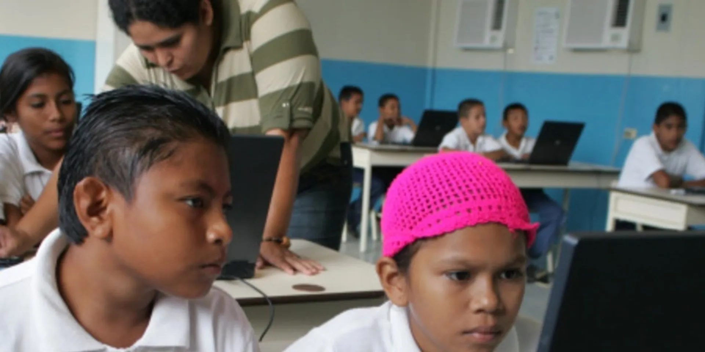
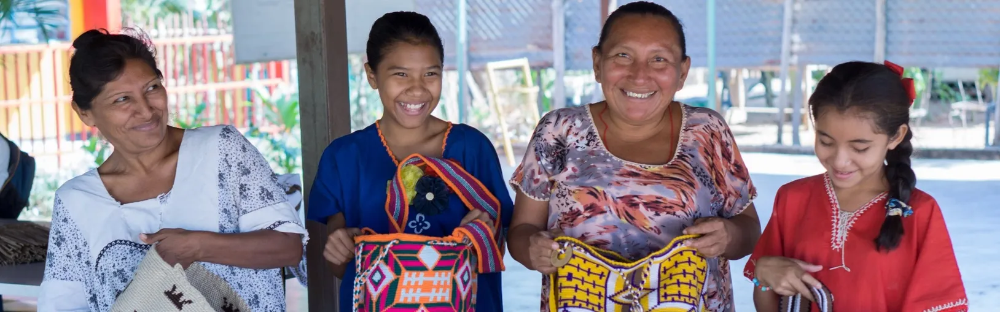
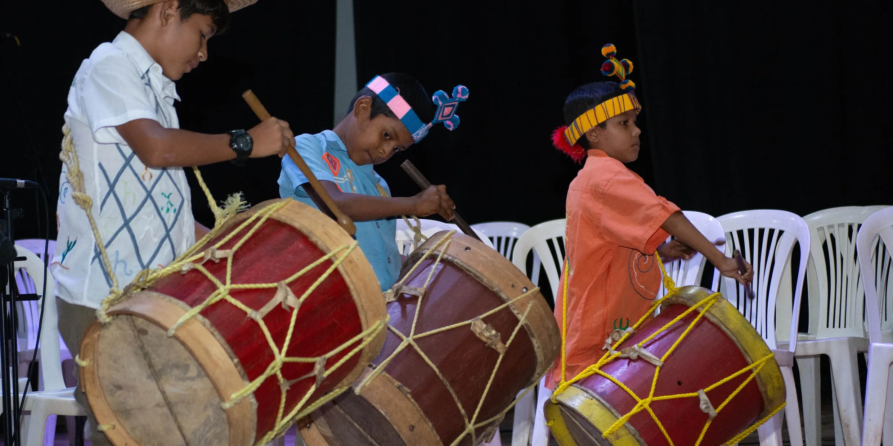

Music
Preserving Wayuu cultural heritage and empowering young musicians through orchestral training, ancestral music, and creative arts.
The Intercultural Wayuu Taya Orchestra
Launched in 2022, the Wayuu Taya Intercultural Orchestra Program is a collaborative effort between the Wayuu Taya Foundation and the National System of Youth and Children's Orchestras and Choirs of Venezuela (El Sistema) under the direction of Gustavo Dudamel. The program is a part of the broader Rhythm of Creativity Fiore Project.
The impact of the orchestra program is profound. Currently, 271 children from the Mara Municipality, aged 5 to 14, are participating, with the involvement of 17 indigenous communities. The Ancestral Music Program, an integral part of this initiative, has engaged 750 students in its mission to inculcate and preserve Wayuu traditions through natural and experiential learning.
Beyond musical notes, our commitment extends to offering academic training to ensure holistic development, providing musical instruments to give each student a voice, supplying transportation to bridge distances, and offering nutritious meals to support their overall well-being.
We invite you to join us in supporting the Wayuu Taya Intercultural Orchestra Program. Your contribution can help us provide essential resources and opportunities, allowing more children to experience the transformative power of music. Together, we can empower these young musicians, preserve their cultural heritage, and create a harmonious future for our communities. Thank you for your support.
Rhythm of Creativity Fiore Project
The Rhythm of Creativity Fiore Project is an initiative aimed at creating a center of creativity for the Wayuu people through music, dance, theater, and entrepreneurship programs. Our Ancestral Music Program, led by Professor Carlos Amaya, is one of the programs under this project that is designed to teach and preserve the culture and identity of the Wayuu people through natural and experiential learning.
In addition, the Intercultural Wayuu Taya Orchestra Program is also a part of this project, providing opportunities for young people to learn and grow through music. The program is led by the National System of Youth and Children's Orchestras and Choirs of Venezuela, aligning their work with the core values of social justice, inclusion, and human development. With 271 kids currently in the program and over 100 on the waiting list, the demand for this program is high, demonstrating the need for support to expand their reach.
Ancestral Music
Our Ancestral Music Program, led by Professor Carlos Amaya, is designed to teach and preserve the culture and identity of the Wayuu people through music, dance, and traditional instruments. With a focus on natural and experiential learning, students will explore topics such as anthropology, history, cosmogony, nature, and onomatopoeias.
Through imitation, narration, and staging of stories, myths and ancestral legends will be recreated, and students will have the opportunity to perform in groups. With 75 children in our program, our goal is to transmit the wisdom of Wayuu culture to new generations.
The Orchestra Program
The Intercultural Wayuu Taya Orchestra Program is dedicated to providing opportunities for young people to learn and grow through music. We believe that music can be a powerful tool for education, personal development, and cultural preservation. Our program is led by the National System of Youth and Children's Orchestras and Choirs of Venezuela, also known as "El Sistema," which was founded by the renowned Maestro José Antonio Abreu. As a team, we align our work with the core values of "El Sistema," which include social justice, inclusion, and human development. We currently work with 271 kids, demonstrating the high demand for our program and the need for support to expand our reach.
Being a part of a training school for citizens with opportunities and recognition, such as the Guinness World Record in 2021 for the participation of 12,000 musicians playing Tchaikovsky's Slavonic March, is a constant inspiration that motivates us to do more. Our program also aims to preserve the indigenous music, languages, and culture of the Wayuu people. We can help the Wayuu community fight poverty and preserve their unique cultural heritage through music.
We prioritize human development in our work, recognizing that music education can profoundly impact individuals and communities. We measure the impact of our work and consistently work to improve. We are committed to sustainability in terms of our program, the movement, and our member organizations.
We invite you to join us in our mission to bring hope and opportunity through music. Your support can help us to reach more young people, preserve indigenous culture, and make a real and lasting impact on the Wayuu community. Together, aligned with the core values of El Sistema, we can empower the next generation of leaders, musicians, and cultural ambassadors.





Music Heals International
Music Heals International has awakened a passion for music in children around the world, inspiring their artistic development, resilience and creativity. In a valuable collaboration with the Wayúu Tayá Foundation, they have started a music education programme in the Camuro sector of the Mara municipality, Venezuela.
Since July 2023, a group of 18 children have been receiving guitar lessons at the welcoming Apuna farm. With the arrival of new instruments, the excitement and motivation of the young musicians is growing day by day. This first class comes from the Wayúu ethnic group, the largest indigenous community in Venezuela. Through music, the children are finding a source of hope and joy, creating a future full of melodies that resonate with their spirit and culture.
Thank you Music Heals International and Core Response for making this possible.
Hasta los Huesos / To The Bone
Nos llena de gratitud el homenaje dedicado a la cultura indígena Wayuu con el lanzamiento de la producción musical: "Hasta los huesos".
El vídeo de la pieza escrita por el compositor venezolano Ali Ochoa, se grabó en la Granja Apüna y sus alrededores con elementos tradicionales como; La Kaasha, ejecutada por los niños de la cátedra de música ancestral y su profesor, Carlos Amaya.
Es una obra detallada y armónica producida por Harold Montero, filmada por PREDA de Gold Riddims y editada por Otto Scheuren, que nos sumerge a través de la simbología, la danza y el teatro en la vida cotidiana y el liderazgo de la mujer indígena.
La interpretación fue realizada por la solista Wayuu Francis Fonseca, acompañada de un novel Coro dirigido por la Profesora Leandra Hernández de El Proyecto Ritmo y Creatividad Fiore, para las artes que llevamos a cabo en Mara.
Agradecemos a la comunidad de Tamare por el apoyo logístico para el acondicionamiento de las locaciones, así como a nuestros voluntarios por haberlo hecho posible.
We are filled with gratitude for the tribute dedicated to the Wayuu indigenous culture with the launch of the musical production: "Hasta los huesos".
The video of the piece written by the Venezuelan composer Ali Ochoa, was recorded at the Apüna Farm and its surroundings with traditional elements such as; The Kaasha, performed by the children of the ancestral music department and their teacher, Carlos Amaya.
It is a detailed and harmonious work produced by Harold Montero, filmed by PREDA of Gold Riddims and edited by Otto Scheuren, which immerses us through symbology, dance and theater in the daily life and leadership of indigenous women.
The interpretation was performed by the Wayuu soloist Francis Fonseca, accompanied by a new Choir directed by Teacher Leandra Hernández from El Proyecto Ritmo y Creatividad Fiore, for the arts that we carry out in Mara.
We thank the Tamare community for the logistical support in preparing the locations, as well as our volunteers for making it possible.
Live Performances
Highlights from the collaboration between the Wayuu Taya Foundation and El Sistema — Venezuela's renowned youth orchestra program.
Singing All Together
The Wayuu Taya Foundation and El Sistema — Singing All Together
First Musical Exhibition
First Musical Exhibition of El Sistema with the Wayuu Taya Foundation Intercultural Orchestra
48th Anniversary Concert
Concert 48th Anniversary of El Sistema and Presentation of the Wayuu Taya Núcleo
Music in Action
Our Programs
Discover more of the ways we're empowering communities across Venezuela through education, clean water, humanitarian aid, and sustainable agriculture.

Help for Those in Need
Emergency food, water, medical supplies, and shelter for families in crisis.
Education
Building schools and training teachers while preserving cultural identity.

Water for All
Clean, safe drinking water through sustainable water solutions.

Agroecology
Sustainable farming, seed preservation, and food sovereignty.
Help us bring the power of music to Wayuu children
Your contribution can help us provide essential resources and opportunities, allowing more children to experience the transformative power of music.